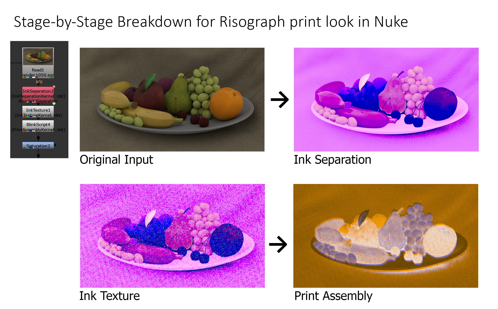

Goal
Recreate the look of Risograph printing inside Nuke using BlinkScript. The tool takes an RGB image and simulates ink separation, physical grain, and final print assembly.
Process

Stage-by-Stage Breakdown for Risograph print look in Nuke
- Ink Separation converts RGB into three ink coverage channels using cosine similarity and luminance matching.
- Ink Texture applies procedural fBm noise to each coverage channel with independent seed offsets.
- Print Assembly composites the final image using multiply blend and offset sampling to simulate plate misregistration.
Technical Details
- Hue-based separation looked artificial. Combined cosine similarity (color direction in RGB space) with luminance
matching to produce coverage values that feel like actual Riso ink plates rather than color filters.
- Cosine similarity (dot product of normalized color vectors) for ink separation
- fBm noise → valueNoise → fBm chain for procedural grain
- Multiply blend mode for physically-based subtractive ink compositin